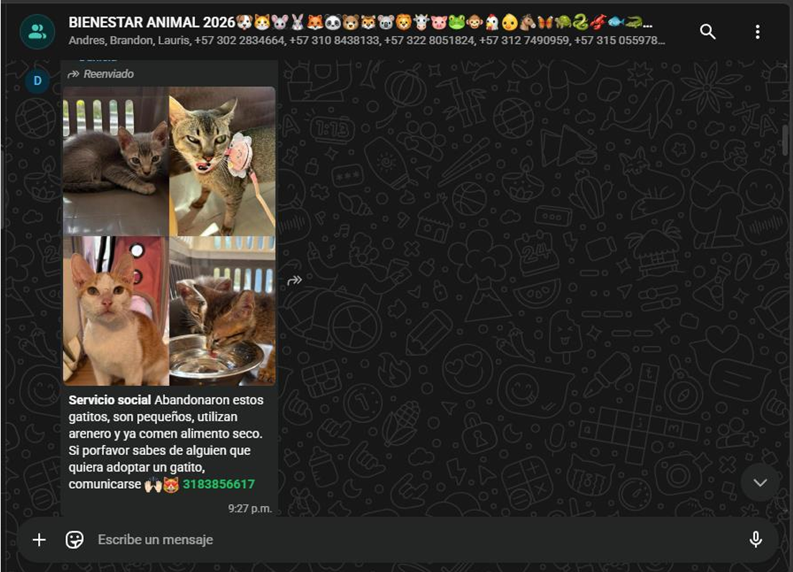

Presentación del Taller
Estudiante: Ever Lotero
Programa: Ingeniería Electrónica
Asignatura: Bienestar Animal
Institución: Universidad de Nariño – Pasto
Este proyecto está dirigido a personas interesadas en adoptar mascotas, comunidad en general, grupos locales (como WhatsApp, redes sociales).
Actualmente, many personas publican animales en adopción a través de grupos de WhatsApp o redes sociales, pero la información se pierde rápidamente, no hay seguimiento del animal, no se verifica la responsabilidad del adoptante, falta organización en los procesos de adopción, esto provoca que muchos animales no encuentren hogar o vuelvan a ser abandonados.

Desde mi carrera de ingeniería electrónica, el proyecto consiste en el desarrollo de una página web de adopción de mascotas, donde se organizará la información de animales disponibles para adopción de manera clara y accesible.
La plataforma permitirá:
Además, la página incluirá, imágenes alusivas al cuidado animal, frases de concientización, recommendations para adoptantes.
👥 Visitas a la plataforma: